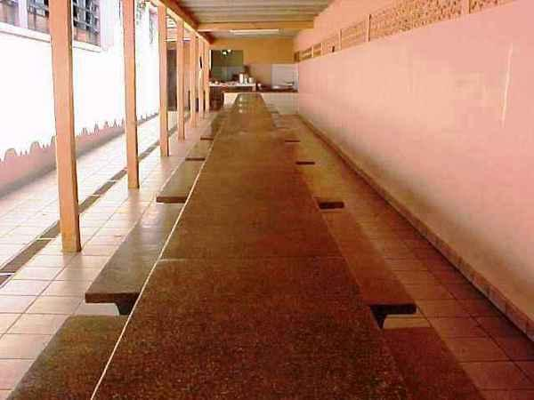
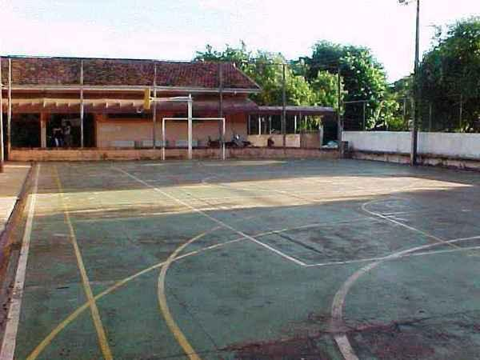

Oiiiiiii meu nome é Lucas Miguel e eu estudo no Colégio Estadual Olavo Bilac Ensino Fundamental e médio, eu gosto bastante de vir para a escola porque aqui aprendo várias coisas interessantes e encontro meus amigos. O almoço da esola é bem gostoso, antigamente eu não gostava do intervalo de almoço porque era muito longo mas agora está mais agadávele eu estou gostando bastante. Gosto bastante de estudar matemática e tenho muita facilidade em aprende-la. Na escola agora procuro fazer coisas novas que não costumo fazer em casa e está sendo muito divertido. Enfim, estou amando vir para a escola, ano passado passava menos tempo na escola mas mesmo assim esse ano tem passado mais rápido que ano passado. Espero poder continuar gostando da escola como gosto e de poder ir para escola aprender.
A quadra é um lugar que esse ano não frequento tanto quanto no ano passado mas mesmo assim de vez em quando damos uma passadinha lá, seja na aula de eletiva ou na de projeto de vida. Esse ano teve algumas brincadeiras legais que participei, como queima e betis. Betis é minha brincadeira favorita, me divirto muito jogando. Ano passado não costumava participar muito das atividades da quadra, mas hoje, tempo ficando tanto tempo parado, participo batante, e é muito divertido. Na quadra também foi onde teve a festa junina, uma festa muito divertida que me diverti muito. Como não queria dançar, eu a sala fizemos uma pescaria, que acabou dando mais trabalho que dançar. Na festa fiquei responsável pela pescaria e era muito divertido ver as pessoas pecando o peixe vermelho, que era o peixe com meno pontos.
